Figure 1. Regional Sense of Place current status scores over time for each of the nine OHI Gulf of California regions. For every region and year, Sense of Place is the equal-weight average of three subgoals: Coastal Community Engagement (CCE), Lasting Special Places (LSP), and Iconic Species (ICO). A score of 100 represents the reference condition we treat as an ideal status; lower values represent lower estimated condition. Years shown are 2019 through 2025.
 Sense of Place EWG 3.2
Sense of Place EWG 3.2
Early Look: Sense of Place (SP)
We plan to review our current estimates of SP scores at the Expert Working Group meeting 3.2 on August 13, 2026. This document is intended to provide attendees with an overview of the goal model and its inputs, and an early look at its outputs, leading up to the meeting. If you read through this and have minor methodological concerns, please flag them and bring them to the meeting. If you have major methodological concerns, please share them ahead of time (email smanos@nceas.ucsb.edu). If you cannot make it to the meeting but would like to discuss, I am happy to meet 1:1 before or after.
Please be advised that this document is intended for internal use only and informational purposes. It should not be interpreted as the final word or of peer-review quality.
Thank you for your continued engagement with this work. We look forward to discussing these scores with you on August 13th!
About the SP Goal
The Sense of Place goal (in Spanish, Sentido de Pertenencia) measures how well we are sustainably caring for the marine and coastal places and species that provide heritage, shared memory, and identity for Gulf communities.
The Ocean Health Index treats people as part of the ecosystem. Sense of Place focuses on cultural identity and belonging connected to the Gulf, not on tourism revenue (Tourism and Recreation; Livelihoods and Economies) and not on food tonnage (Food Provisioning).
CORE DEFINITION
- Focus: Sustainable care of places and species that sustain cultural identity and belonging
- Not about: Tourism revenue, commercial catch volume, or generic biodiversity alone
- Emphasis: Iconic species condition, lasting special places, and coastal community engagement
Goal model
The overall Sense of Place score is the equal weight arithmetic mean of three subgoals:
SP = average(CCE, LSP, ICO)
SP_{r,t} = \frac{CCE_{r,t} + LSP_{r,t} + ICO_{r,t}}{3}
where:
- SP_{r,t} is the Sense of Place score for region r in year t
- CCE_{r,t} is the Coastal Community Engagement score (beach adoptions and non-natural cultural places)
- LSP_{r,t} is the Lasting Special Places score
- ICO_{r,t} is the Iconic Species score
| Subgoal | What it measures |
|---|---|
| CCE | Coastal Community Engagement: beach adoptions (Ama tu Playa beach adoption program) and non-natural cultural places scaled to coastal population |
| LSP | Lasting Special Places: condition of EWG identified special places (protected areas, dive sites, fishing spots, archaeology, habitats, and other places) |
| ICO | Iconic Species: mean risk status of culturally iconic species occurring in each region |
Scores are calculated for each of the nine OHI Gulf of California regions. A score of 100 represents the reference point (ideal sustainable state). Where a subgoal has no value for a region year, the arithmetic mean uses the available subgoals (na.rm = TRUE).
Equal weights for CCE, LSP, and ICO are the current working choice. See Topics for discussion for confirmation with the group.
A note on English and Spanish naming
You may have noticed that we use Sense of Place and Sentido de Pertenencia together, even though pertenencia typically translates as “belonging.”
Early in a Goalkeeper meeting, we found a regional difference in what “Sense of Place” and “Sense of Belonging” convey. Historically, the Global Ocean Health Index has used Sense of Place for maintaining and promoting local communities’ identity and connection to the ocean. Based on feedback from the group, Sense of Belonging better reflected that same concept in Mexico.
We considered renaming the goal to Sense of Belonging to match the regional definition, but decided against it. In U.S. literature, Sense of Belonging usually describes the connection of individuals to their community, not the community’s connection to a place. Using that English goal name would risk losing the link to the ocean, which is what we want to evaluate.
With that in mind, the Goalkeeper group decided:
- In English, we still call it Sense of Place, to match the literature and English language understanding of the phrase.
- In Spanish, we call it Sentido de Pertenencia, to reflect the connection between a community and its lugar.
This naming choice was developed and supported by the Goalkeeper Group and was confirmed at the Expert Working Group meeting in January.
Overall Sense of Place scores
The overall SP current status score for each region and year is the arithmetic mean of that region’s CCE, LSP, and ICO scores.
Reporting years for overall SP: 2019-2025. We will not update overall scores past 2025 until all data sources have been updated through 2026.
Gulf-wide average SP current status
The same overall SP score averaged across all nine OHI Gulf of California regions for each year:
\text{SP}^{\text{GOC}}_{t} = \frac{1}{9}\sum_{r=1}^{9} SP_{r,t}
where SP_{r,t} is the regional Sense of Place score and the Gulf-wide line is their simple mean for year t. Compare this with the regional chart above to see whether Gulf-wide patterns are driven by a few regions or shared across the coast.
Figure 2. Gulf-wide Sense of Place current status: one line that averages the nine regional SP scores for each year from 2019 to 2025. This is a simple mean across regions (not weighted by area or population), so each OHI region contributes equally. Use this plot with Figure 1 to see whether a Gulf-wide rise or fall is shared widely or driven by a few regions only. The dashed reference at 100 is the goal condition.
Coastal Community Engagement (CCE)
CCE captures coastal community engagement with beaches and non-natural cultural places that help people connect to the Gulf.
In the most recent Expert Working Group discussion, beach cleanups and adoption and the continued presence of non-natural cultural places were affirmed as appropriate CCE components. Indicators of support for coastal Indigenous communities were also considered, but are not included in the current score. See Acknowledgment: Pueblos originarios.
CCE_{r,t} = \mathrm{average}\big(Ama_{r,t},\; Cult_{r,t}\big)
where:
- CCE_{r,t} is the Coastal Community Engagement score for region r in year t
- Ama_{r,t} is the beach adoptions score (Ama tu Playa beach adoption program)
- Cult_{r,t} is the non-natural cultural places score
Missing values are ignored in the average. For example, Region 2 has no Ama tu Playa inventory beaches, so its CCE is driven by the cultural places layer alone.
Overall CCE current status is shown for 2019-2025 only (see the note under Overall Sense of Place scores). The cultural places layer still plots through 2026 below so the group can see recent DENUE based change without including incomplete beach adoption coverage in the composite.
Figure 3. Coastal Community Engagement (CCE) current status by region and year (2019-2025). CCE is the mean of two layers: beach adoptions under Mexico’s Ama tu Playa program, and non-natural cultural places scaled by coastal population. Missing values are dropped from the average, so a region without beaches in the Ama inventory (for example Region 2) is scored from the cultural-places layer alone when that layer is available.
Beach adoptions
The Ama tu Playa beach adoption program is part of Mexico’s Estrategia Nacional de Limpieza y Conservación de Playas y Costas de México 2025-2030, coordinated with SEMARNAT and partners. Organizations adopt a beach or coastal stretch and commit to keeping it clean through 2030, with the national goal of beaches free of plastic waste.
What we score: percent of SEMARNAT program inventory beaches that are already adopted in each OHI region (not kilograms of trash collected). More trash collected can mean either dirtier beaches or stronger cleanup effort, so adoption share is closer to the program’s own stewardship target.
Ama_{r,2025} = 100 \times \frac{\text{adopted beaches}_{r}}{\text{total inventory beaches}_{r}}
where:
- Ama_{r,2025} is the beach adoptions score for region r in 2025
- \text{adopted beaches}_{r} is the number of inventory beaches in that region that are already adopted
- \text{total inventory beaches}_{r} is the number of inventory beaches in that region
For 2019-2024, Ama_{r,t} = 0 because the campaign begins with the 2025-2030 strategy. Region 2 has no beaches in the program inventory identified by SEMARNAT as in need. It is treated as NA with reason "no beaches in program inventory".
Data sources
- SEMARNAT Ama tu Playa beach inventory and adoption status from the national beach cleanup and conservation strategy catalog; adoption percent by OHI region
- Platform: adoptaunaplaya.com
Figure 4. Beach adoptions layer of CCE: the share of SEMARNAT Ama tu Playa inventory beaches in each region that have already been formally adopted. Adoption means an organization has committed to keep that beach or coastal stretch clean under the 2025-2030 national beach strategy; we score stewardship through adoption share, not kilos of trash collected. For 2019-2024, the campaign had not started yet, so adoptions are recorded as 0. The Western Midriff Islands OHI region has no beaches in the program inventory.
Figure 5. Beach adoptions in the 2025 reporting year only, compared across OHI regions as vertical bars. Each bar is the percent of Ama tu Playa inventory beaches in that region that are already adopted (0 to 100). The dashed line at 100 marks full adoption of every inventory beach in a region.
Non-natural cultural places
This CCE layer measures human-made cultural establishments near the Gulf coast that support community connection to place.
Which cultural establishments are included?
We start from INEGI DENUE sector 71 (servicios de esparcimiento culturales y deportivos, y otros servicios recreativos) and keep establishments that function as cultural economic units with a meaningful coastal connection, within the inland 10 km coastal buffer of the six Gulf of California states.
Examples of establishment types retained
- Theaters and other performing arts venues
- Museums and cultural exhibition spaces
- Historic sites and related heritage establishments
- Botanical gardens and similar nature-culture venues
- Public parks and recreation spaces with cultural connection
- Coastal recreation establishments that support place-based coastal use
Examples excluded
- Charreadas (for example establishments named LIENZO CHARRO)
- Cockfighting venues (for example GALLERA)
- Selected administrative businesses identified by name that do not represent community cultural engagement with the coast
The intent is to count places where people gather around coastal culture, heritage, and recreation, not every establishment that happens to fall under the broad DENUE culture and recreation sector.
How the layer was built
- Start with INEGI DENUE sector 71 for 2019-2026.
- Restrict to the six GoC states and keep only establishments inside the inland 10 km coastal buffer.
- Limit to cultural economic units with a meaningful coastal connection (see list above for what is included and excluded).
- Estimate employees from DENUE employment size classes, aggregate by region and year, and divide by coastal locality population within the same 10 km buffer.
- Convert the per capita rate to a 0 to 100 status using the 75th quantile of employees per capita across all regions and years as the reference:
Cult_{r,t} = \min\left(100,\; 100 \times \frac{\text{employees per coastal pop}_{r,t}}{Q_{0.75}(\text{employees per coastal pop})}\right)
where:
- Cult_{r,t} is the non-natural cultural places score for region r in year t
- \text{employees per coastal pop}_{r,t} is estimated cultural-establishment employees divided by coastal locality population in the inland 10 km buffer
- Q_{0.75}(\text{employees per coastal pop}) is the 75th quantile of that rate across all regions and years
- Scores above 100 are capped at 100
Yes, both the establishments and the population are coastal. Establishments are restricted to the inland 10 km coastal buffer, and population is from localities intersecting that same buffer (not whole municipalities inland of the Gulf).
Years: The full cultural places series is 2019-2026 (updated DENUE prep for the inland 10 km coastal buffer). We show 2026 here on purpose, so the group can see recent direction of change for this subcomponent. 2026 is not yet included in overall CCE or SP, because Ama tu Playa adoption inventory is not yet a reliable 2026 observation (see the note under overall scores). Note that we are able to include 2026 because we use the release of the economic unit inventory released yearly, as a snapshot to represent the annual economic units and number of employees.
What stands out in 2025 and 2026 for non-natural cultural places. Two regions show interesting increases that matter for interpreting the CCE cultural layer (and the series through 2026, even though 2026 is not yet included in overall CCE or SP).
- Western Upper Gulf (San Felipe area): community cultural capacity grew. DENUE records shifted from only one small art studio (roughly 0-5 employees) toward three places, including a casa de cultura and a children’s cultural and sports center, with estimated cultural jobs rising from about 3 to about 20.
- Western Central Gulf (Mulegé area): the count of places stayed similar (about four to five museums and cultural centers, including the Casa de la Cultura and the Museo Comunitario de Mulegé), but estimated employment grew from about 30 to about 50 staff. More staff is a signal of more activity at existing community cultural places, not only of new sites opening.
Both cases suggest that recent score movement can reflect real growth in coastal cultural infrastructure and jobs.
Data sources
- INEGI DENUE sector 71 cultural and recreation establishments within the inland 10 km coastal buffer; employees estimated from DENUE size classes, scaled to coastal locality population, referenced to the 75th quantile; series through 2026
Why we use the 75th quantile (compared with the 90th)
Before converting to a current status score, the raw rates of employees per coastal resident already show that the Western Midriff Islands (Region 2) sit far above the other regions. Using a high reference like the 90th quantile would make that outlier dominate the benchmark and pull most other regions toward very low scores. We therefore use the 75th quantile as the reference. It still rewards higher cultural employment density, but is less driven by Region 2 alone. Alternatives we considered (and set aside) include the 80th and 90th quantiles and a 2019 regional baseline.
The plot below shows the raw rate (not yet scaled to 0-100). Horizontal lines mark the pooled 75th and 90th quantiles across all region-year observations so you can see why the 75th is the more balanced choice for this Gulf data.
Figure 6. Raw non-natural cultural places rate used before conversion to a 0-100 status score. We estimate cultural-establishment employees from INEGI DENUE size classes for curated sector 71 workplaces that sit inside a 10 km inland coastal buffer, then divide by coastal locality population in the same buffer. The green dashed line is the pooled 75th quantile of this rate across all region-years (our chosen reference). The red dotted line is the 90th quantile. Region 2 (Western Midriff Islands) sits far above the others; the 75th quantile still rewards high density while being less dominated by that single outlier than a 90th-quantile reference would be.
The 75th quantile is our chosen reference for this assessment cycle.
Figure 7. Non-natural cultural places status after scaling the Figure 6 rate to the 75th quantile reference and capping at 100. A region at the 75th quantile of employees per coastal resident scores 100; regions with lower rates score proportionally lower. This series shows 2019 through 2026 so experts can see recent DENUE-based change, but 2026 is not yet included in overall CCE or SP because beach-adoption inventory for 2026 is not yet reliable.
Acknowledgment: Pueblos originarios
Why this section exists
This section records a methodological and ethical decision: coastal Indigenous communities are central to the Gulf of California, but we did not feel comfortable scoring their Sense of Place and connection to the ocean with indicators we designed without sustained partnership with community representatives.
Pueblos originarios and other First Nations communities of the Gulf of California hold deep, living relationships with coastal and marine places. Those relationships are not a side note to Sense of Place. They are part of what Sense of Place means in this region.
At the same time, Indigenous peoples are not a single box. They are also coastal residents, fishers, knowledge holders, and neighbors within the same seascapes that the Index tries to describe. We do not want to isolate them from the Index, and we also do not want to impose an outside framework for assessing the condition of their connection to the ocean.
What we considered for CCE
During goal development, we explored indicators of support for coastal Indigenous communities, including ideas such as:
- Recognition, for example whether there are government documents that provide translations between coastal pueblo originario languages and español (as a possible signal of recognition).
- Planes de justicia and Justice and Integral Development Plans from INPI for coastal pueblos originarios, described by INPI as planning exercises carried out by Traditional Authorities through their own forms of government and decision making, with INPI support for regional diagnoses, proposals from community visions of well-being and justice, and follow-up on agreements with government agencies.
- Indigenous development centers that receive federal funding, compared with the population size of First Nations (INEGI), as a possible signal of institutional support.
It was also proposed to frame the metric around two practical questions: (1) is the community recognized by the government, and (2) do they have funding support and centers?
Why these indicators are not in the current score
After discussion, we decided not to include these indicators in the published CCE score for this assessment cycle, because:
- We did not have the time and resources to keep Indigenous groups in continuous conversation throughout Index development in the way this topic requires.
- We do not want to presuppose community condition or speak for them, or publish a score that implies a community “should” want a particular form of recognition (for example, language policy) when we have not heard that from their representatives.
- There are important nuances. For example, the Tohono O’odham communicated to one of the experts in our working group, as part of a separate project, that it does not want to be considered a pueblo originario. Any indicator built only on official categories would miss that kind of self-determination.
- We received pushback against counting the number of Indigenous resource centers. That framing would treat government financial support for a community meeting and resource location as automatically “positive,” but we do not know whether that is a good thing unless we speak with the pueblos originarios themselves. Expert Working Group discussion confirmed beach cleanups and continued presence of non-natural cultural places for CCE, while use of Indigenous development centers remained in question.
Because of this, the language recognition, justice plans, and Indigenous development center components were moved to Tier 3: ideas that would ideally be incorporated in the next time the assessment is run, but currently are not indicators we are ready to score as if they represent community values.
Looking forward
We hope that future iterations of the Gulf of California Ocean Health Index can incorporate co-developed indicators if communities choose to participate. The Index is meant to be reassessed over time, and methods should keep improving as relationships and capacity grow. We welcome guidance from the Expert Working Group on how to keep acknowledging pueblos originarios clearly on the website and in communications without extracting or scoring what we have not been invited to score.
If you have contacts, cautions, or preferred language for this acknowledgment, please email me.
Lasting Special Places (LSP)
LSP measures how well we are protecting places that the Expert Working Group identified as lasting special places for ecological, cultural, recreational, spiritual, or aesthetic reasons.
How LSP was built
Experts identified special places. The Expert Working Group identified lasting special places across the Gulf. We then grouped those places into types (special protected areas, priority dive sites, iconic fishing spots, archaeological sites, special habitats, and all other special places).
We overlaid protections. We overlaid the coordinates of those special places with the potential protections that would keep them preserved, available, and well managed for future generations (for example CONANP and Ramsar protected areas, fishing refuges, cooperative fishing territories, INAH regulation, and other legal protections).
Not all protections are equal. Legal protections alone were generally given lower condition scores than stronger on-the-ground management. Protected areas were scored using SIMEC i-efectividad (and Ramsar management plan presence where relevant). In other words, the score reflects how well a place is protected, not only whether a protection label exists on paper.
LSP_{r} = \mathrm{average}\big(\text{condition of LSP categories present in region } r\big)
where:
- LSP_{r} is the Lasting Special Places score for region r
- Each category condition is the protection condition assigned to that category’s special places in the region
- The region score is the unweighted arithmetic mean across the LSP categories that have features in that region
Assessment year: 2025 snapshot.
The map below shows the overall LSP current status for 2025 by OHI marine region (static export from LSP prep visualization on Mazu). Colors run from lower scores (warmer colors) to higher scores (cooler colors) on a fixed 0 to 100 scale. White regions have no combined score, and are NA.

Spreadsheets for expert review
Rather than embedding long inventories as dropdowns here, please use these Google Sheets (same workbook; open the tab named in the link):
Condition approach by LSP category
Within each category, we check for the strongest applicable protection first, then move to weaker or more general protections if needed. For each category below we show:
- Method map(s). A method map is a figure that walks through an example of how that LSP type is scored. It shows the places, protections, or condition layers we used so you can see the method in space, not only as a list of rules.
- Regional category score on the same 0 to 100 scale (white means no score for that category in the region)
A multi-panel of all category scores is also at the end of this section.
Special Protected Areas
These are CONANP and Ramsar areas that experts indicated as special because they are very important ecologically, culturally, or aesthetically. They are not the full set of every protected area boundary in the Gulf. Experts selected places that matter as lasting special places for communities and nature, rather than areas that may exist on paper mainly from political design processes without that place-based meaning.
What is SIMEC i-efectividad? CONANP reports management effectiveness through SIMEC (Sistema de Información, Monitoreo y Evaluación para la Conservación). The i-efectividad score summarizes how well a natural protected area is managed toward its conservation goals. It is not simply an “is the special place located within a protected area?” indicator. Effective management depends on suitable design, governance, staffing and budgets, day-to-day processes, and whether outcomes match site objectives. CONANP’s reporting sits in the broader international tradition of protected-area management effectiveness evaluation (for example frameworks used by the IUCN World Commission on Protected Areas). Details of the current method are in CONANP’s 2025 technical document for i-efectividad. We use reported i-efectividad values as the preferred condition when an expert-listed site has them, because higher management effectiveness is a stronger claim that the place will remain protected for future generations.
Ramsar sites are wetlands of international importance under the Ramsar Convention. When a Ramsar site does not have a usable SIMEC score, we score management-plan status instead: a completed plan is treated as stronger, a plan in progress receives a mid-level score, and no plan is treated as weaker.
- Prefer SIMEC i-efectividad (management effectiveness among CONANP reporting areas) when available.
- For Ramsar sites, also account for management plan presence:
- Plan exists: use the maximum i-efectividad value used for this comparison
- Plan in progress: score = 60
- No plan: use the minimum i-efectividad value used for this comparison
The method map fills each expert-listed special protected area by its overall condition. Grey outlines show the broader protected area network for context.
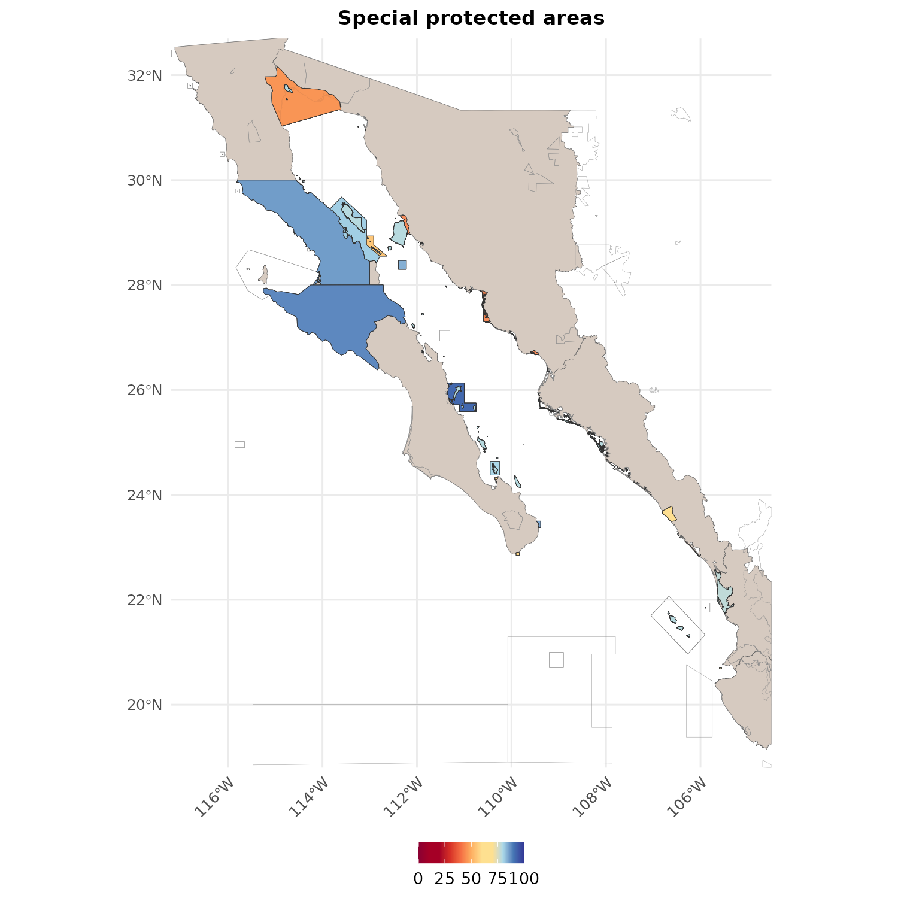
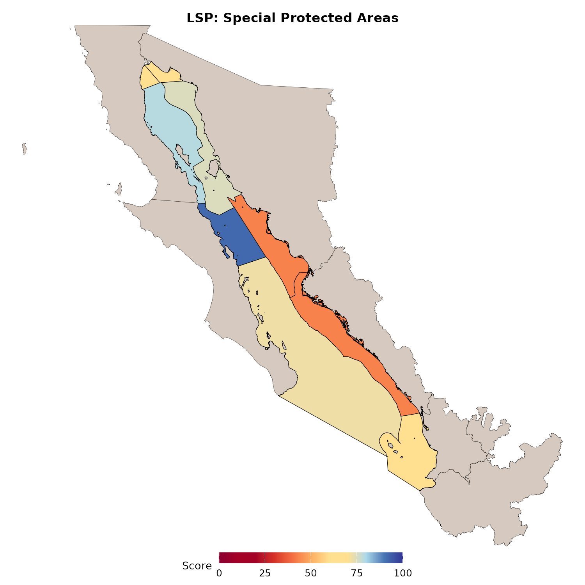
Data sources
- Expert Working Group special protected area list (workbook tab)
- CONANP SIMEC i-efectividad (scores and report links; 2025 technical document)
- Ramsar management plan presence (tab)
- Combined protected area polygons: WDPA (January 2025), CONANP ANP layers, and HEM ANP compilation
Priority Dive Sites
These are dive spots from the Arcos-Aguilar et al. (2021) dive-site inventory and the CBMC GCMP prioritization of diving sites that would benefit most from formal protected-area management.
How Arcos-Aguilar et al. (2021) assembled and characterized dive sites. Arcos-Aguilar et al. (2021) built the most comprehensive national inventory of recreational dive sites in Mexico to document the economic importance of diving tourism and its dependence on healthy marine habitats. Their method:
- Web inventory of sites. From January to March 2018 they searched Google in English and Spanish (
Diving/Dive sites/Buceo/Sitios de buceo+ Mexico, then each coastal state). They retained results from tourism and diving-operator websites, dive magazines, peer-reviewed papers, and gray literature. - Popularity proxy. Each time a place reappeared in search results was tallied as a “frequency of appearance,” used later as a simple popularity signal (more web mentions ≈ more widely advertised/known).
- Operators and economics. They also assembled and field-checked active diving operators and surveyed a subset about clients, prices, and costs, showing that national diving revenues are on the same order of magnitude as Mexico’s artisanal and industrial fisheries together.
- Protection status overlay. Site coordinates were overlaid on CONANP marine protected-area polygons and no-take sub-zones. Of the inventory, roughly half the sites sat inside some form of natural protected area, a small minority fell inside no-take zones, and a large share (about 42%) still lacked any protection designation.
The paper’s policy message is that many tourism-visible dive places remain outside strong protection even though diving depends on intact reefs and wildlife, and that higher encounter quality (especially in no-take settings) is linked to the experience visitors pay for.
What “priority dive sites” mean in this Index. We do not score every pin from the full national inventory. Prep restricts to the CBMC GCMP prioritization of diving sites table that sits with the Arcos/GCMP data products: a curated subset of sites with coordinates and priority fields that flags diving locations of particular conservation and tourism importance, then keeps only points that fall in OHI Gulf of California marine regions or the inland 10 km coastal buffer. That priority subset is what we call priority dive sites here.
Why we use that subset as lasting special places. Arcos-Aguilar et al. showed that a large share of marketed dive sites still lie outside protected areas, while wildlife encounters that define the dive experience are more likely in managed or no-take waters. We therefore treat the priority list as places that have been isolated as sites that would benefit from lying within a protected area. For Sense of Place, the ideal reference condition is that all priority dive sites sit inside managed protected areas or equivalent protections (so communities and visitors can still experience the place that made the trip meaningful). Scoring follows that ideal: inside CONANP/Ramsar areas we use SIMEC i-efectividad (and Ramsar plan rules when they apply); outside, only a weaker minimum under national tourism law remains, so unprotected priority sites pull the score down relative to a fully protected network.
Why protected dive sites score higher (Scoring rules). Priority dive places are lasting special places because people travel specifically to experience them. Protection helps keep the wildlife, reefs, and underwater features that make the trip meaningful, supports dive-based livelihoods when sites stay high quality, and reduces cumulative damage from use and extractive pressure. Managed protected areas and no-take areas increase the chance that the site remains the place communities and visitors valued. Outside of protected areas, there is still the national dive-tourism law (NOM-012-TUR-2016), but that residual duty of care is intentionally weaker than well-managed protection, because it is not the same as active protected area management for a special place. Therefore:
- If the dive site falls in a CONANP and/or Ramsar protected area, use SIMEC and Ramsar plan condition for that area.
- If it falls in both, take the maximum of the two condition scores.
- If it is outside protected areas, use a non-zero floor from NOM-012-TUR-2016 §6.11 (legal dive tourism rules that apply inside and outside protected natural areas). We determined the score by using the minimum observed SIMEC i-efectividad condition among dive sites that do have a protected-area score (currently 58).
Gulf-wide dive sites by overall condition, then Espíritu Santo zoom (inside protected area vs outside with tourism-rule floor), then regional scores.
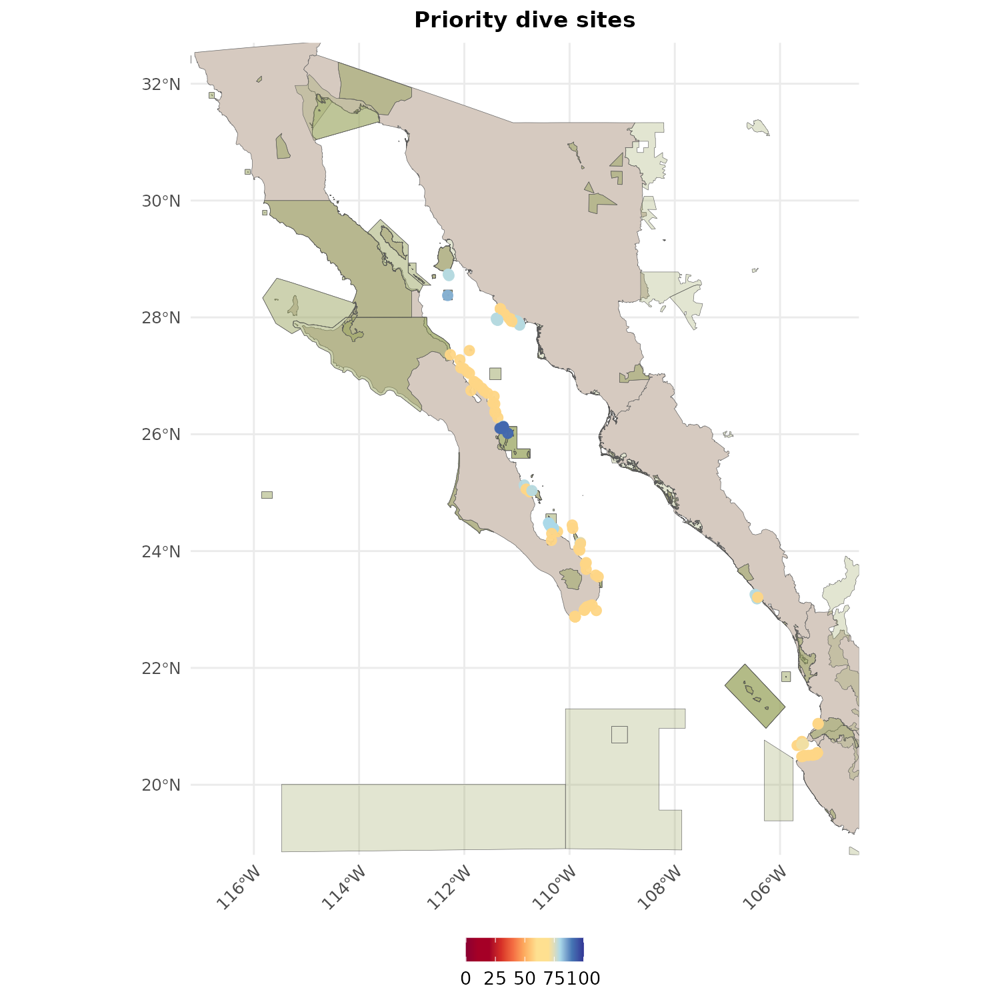
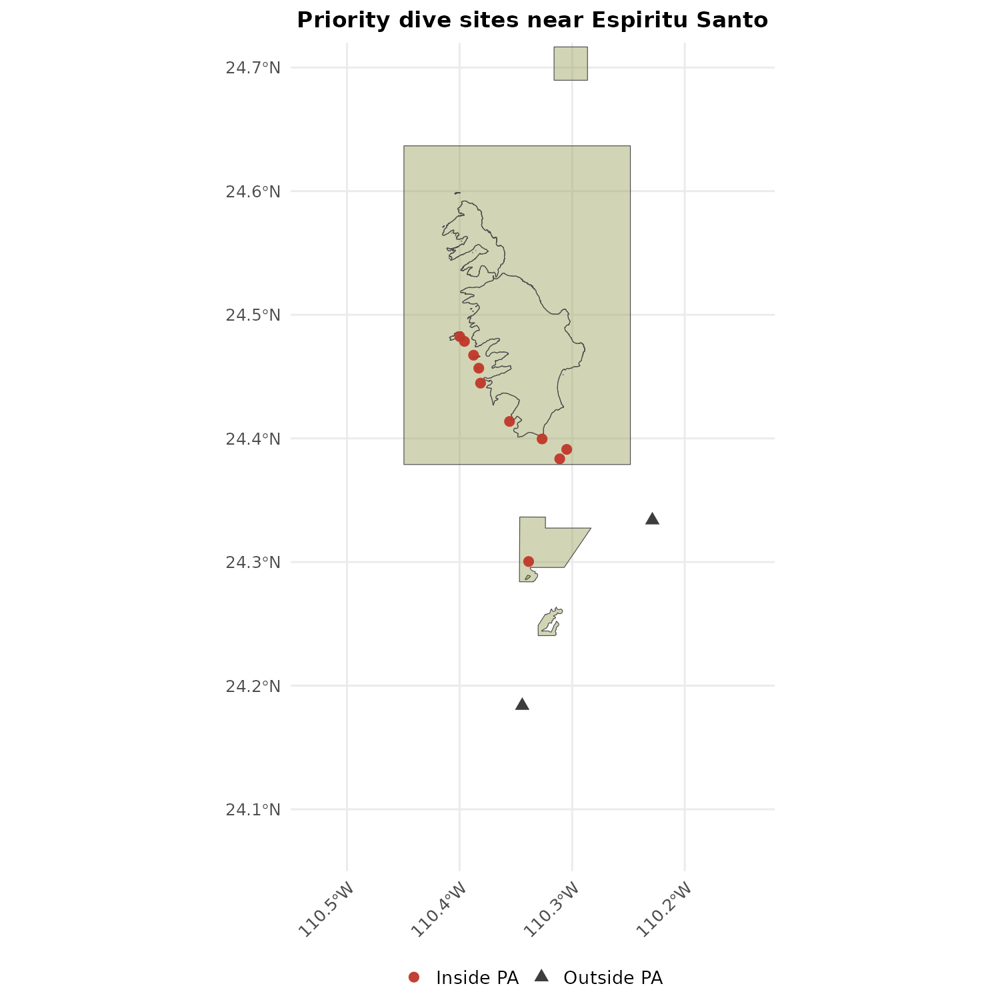
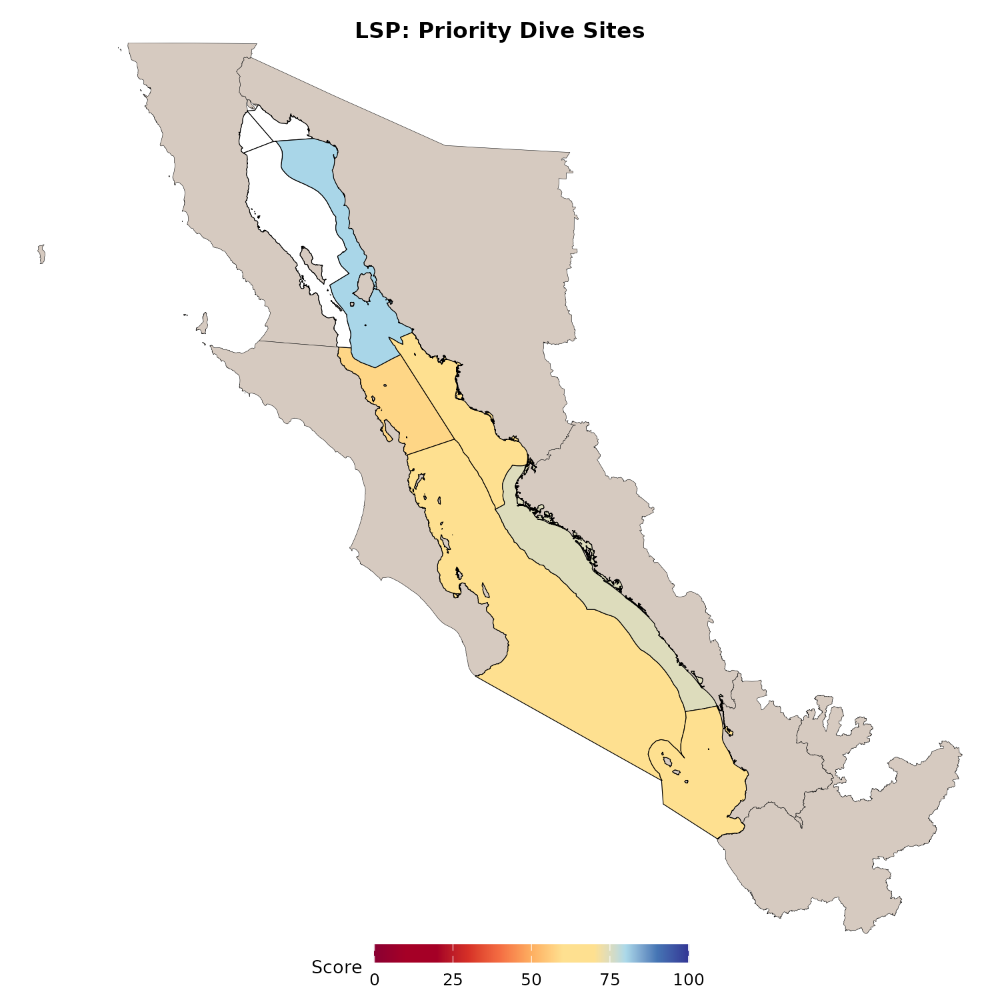
Data sources
- Arcos-Aguilar, R., F. Favoretto, J.A. Kumagai, V. Jiménez-Esquivel, A.L. Martínez-Cruz, and O. Aburto-Oropeza. 2021. Diving tourism in Mexico – Economic and conservation importance. Marine Policy 126: 104410. https://doi.org/10.1016/j.marpol.2021.104410
- CBMC GCMP dive site layers and prioritization of diving sites table (coordinates and priority fields used in prep)
- Combined protected areas (WDPA, CONANP, HEM) as above
- CONANP SIMEC i-efectividad and Ramsar management plan presence
- NOM-012-TUR-2016 §6.11 (dive tourism rules inside and outside protected natural areas)
Iconic Fishing Spots
These are historically important fishing coordinates indicated by experts.
What is a ZRP? In Mexico, a ZRP is a zona de refugio pesquero (fishing refuge zone): a designated marine or coastal area where fishing is partly or fully restricted. The intent is to protect marine life, allow depleted fish stocks to recover, and support sustainable seafood livelihoods for local communities. In this model, an iconic fishing place that falls inside a mapped ZRP receives a condition of 100.
What is a TURF? A TURF is a territorial use right in fisheries: fishing rights allocated to a defined cooperative or community territory. We treat confirmed TURF sites as strongly protected for this place-based cultural use (also score 100). Nationwide TURF polygons are not easily available as a single public layer for batch processing, so TURF matches are based on expert review and published maps (Aceves-Bueno et al. 2023 and the associated mapping tools).
- If the site is in a zona de refugio pesquero (fishing refuge): score = 100.
- Else if the site is in a cooperative fishing territory (TURF): score = 100 (confirmed visually with Aceves-Bueno et al. 2023; national TURF polygons are not easily downloadable for batch use).
- Else use SIMEC and Ramsar plan scores if the site overlaps a relevant protected area.
Method map: ZRP vs TURF vs In PA vs Other. Then regional fishing scores.
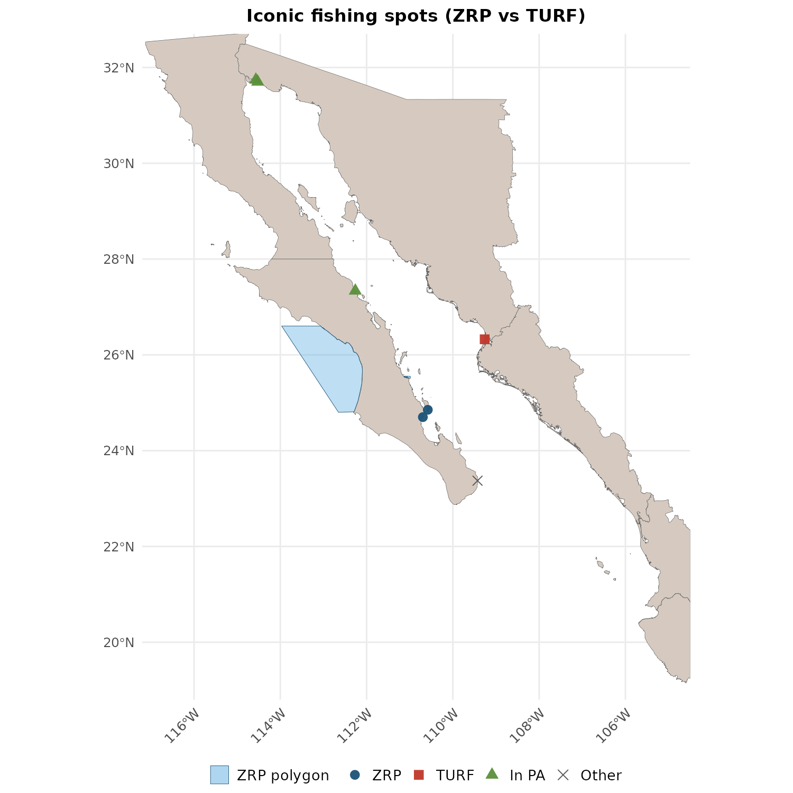
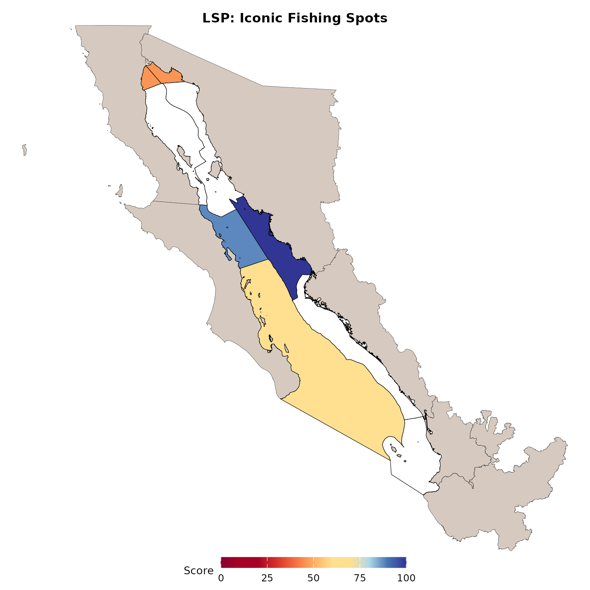
Data sources
- Expert Working Group fishing area inventory
- TNC geoportal fishing refuge (ZRP) polygons
- Aceves-Bueno et al. 2023, Sustaining small-scale fisheries through a nation-wide Territorial Use Rights in Fisheries system (PLOS ONE); TURF locations reviewed in that paper and associated Shiny map
- SIMEC and Ramsar plan rules when fishing sites overlap protected areas
Archaeological Sites
These are places where remains make the surrounding natural area culturally and spiritually special (for example shell middens and other coastal archaeological landscapes).
What is INAH, and why does it count as protection? INAH is Mexico’s Instituto Nacional de Antropología e Historia (National Institute of Anthropology and History), created in 1939 to conserve, study, and share the country’s archaeological, historical, and related heritage. INAH oversees archaeological zones open to the public, historical monuments, research, cataloging, and restoration nationwide. Public-facing entry points include the archaeological zones pages (https://www.inah.gob.mx/zonas-arqueologicas) and the historical monuments coordination (https://monumentoshistoricos.inah.gob.mx/). For Lasting Special Places, matching an Expert Working Group site to a nearby official INAH inventory point is treated as the strongest heritage-management pathway available in our hierarchy (score 100), because the site is linked to the national institution responsible for that form of protection and stewardship.
- If the site matches a nearby INAH inventory point (about 10 km): score = 100.
- Else if a nearby natural protected area applies (about 500 m) with a management score: use that score (including special cases such as the Hauxa Manaka pact site).
- Else partial legal cover only: score = 30 (Ley Federal sobre Monumentos y Zonas Arqueológicos, Artísticos e Históricos).
Method map: scored sites with INAH / In PA / Legal only rules. Then regional archaeology scores.
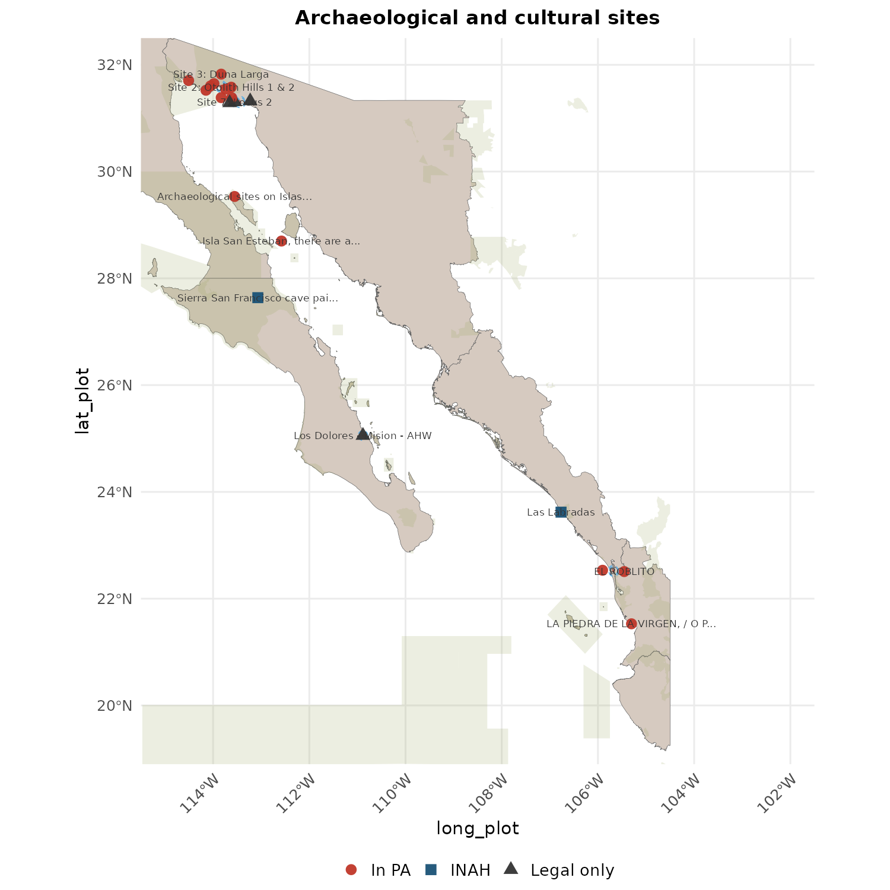
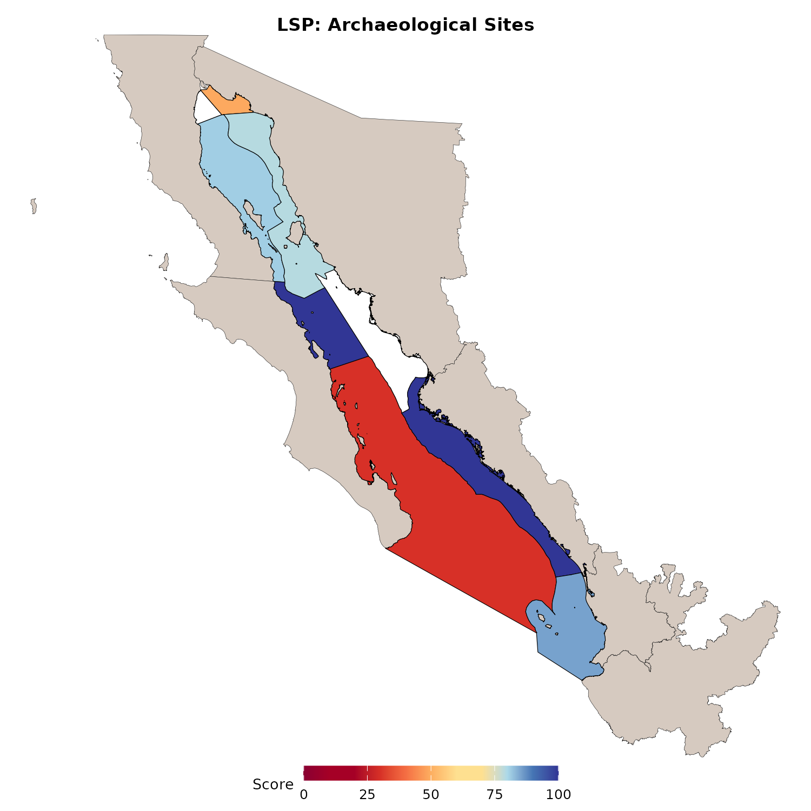
Data sources
- Expert Working Group archaeological and coastal cultural sites
- INAH archaeological sites table
- Ley Federal sobre Monumentos y Zonas Arqueológicos, Artísticos e Históricos (1972)
- Protected area scores for sites inside ANPs (SIMEC and prep tables)
- Regional archaeology context for the Upper Gulf (e.g. Prehistoric Adaptation, Identity, and Interaction Along the Northern Gulf of California; open chapter figure on Manifold / University of Arizona Press)
Special Habitats
These include seagrasses, mangroves, coquina reefs, and coral reefs (coral limited to expert-named Region 4 reefs).
- Prefer SIMEC and Ramsar plan scores when the habitat polygon touches a managed protected area after a 100 m buffer.
- Else use a statute-based minimum by habitat type (about 70 for mangrove, seagrass, and coral; 30 for coquina when there is no dedicated coquina statute). These scores are chosen to reflect how well the codified regulations are protecting the special habitat, comparatively. We will require expert input on this.
- Take the better of the protected area score (SIMEC i-efectividad or Ramsar plan rules) and that statute-based minimum.
Type means by region, coquina example, then regional special-habitats scores.
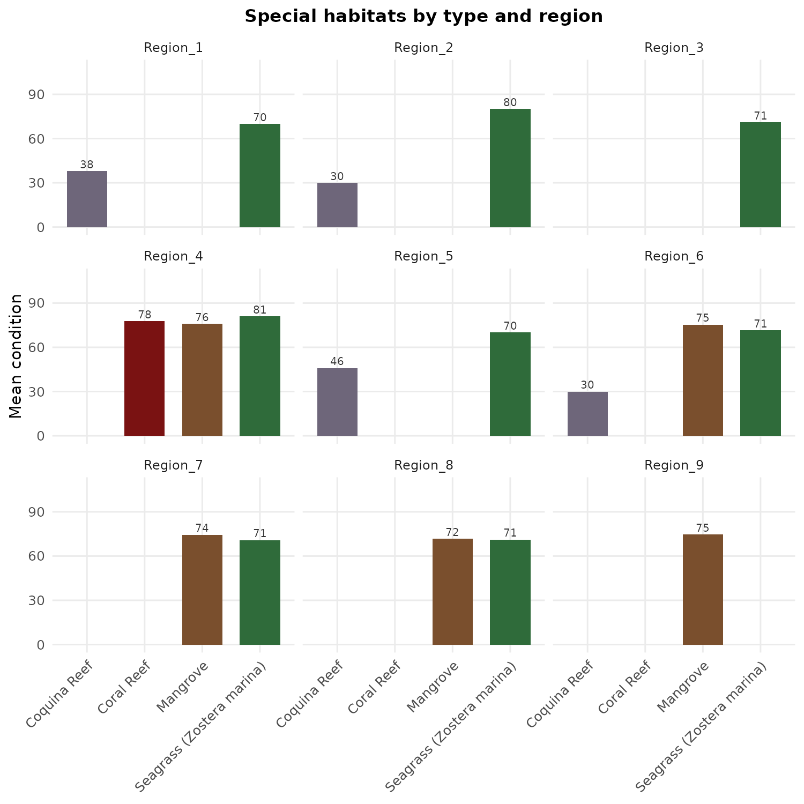
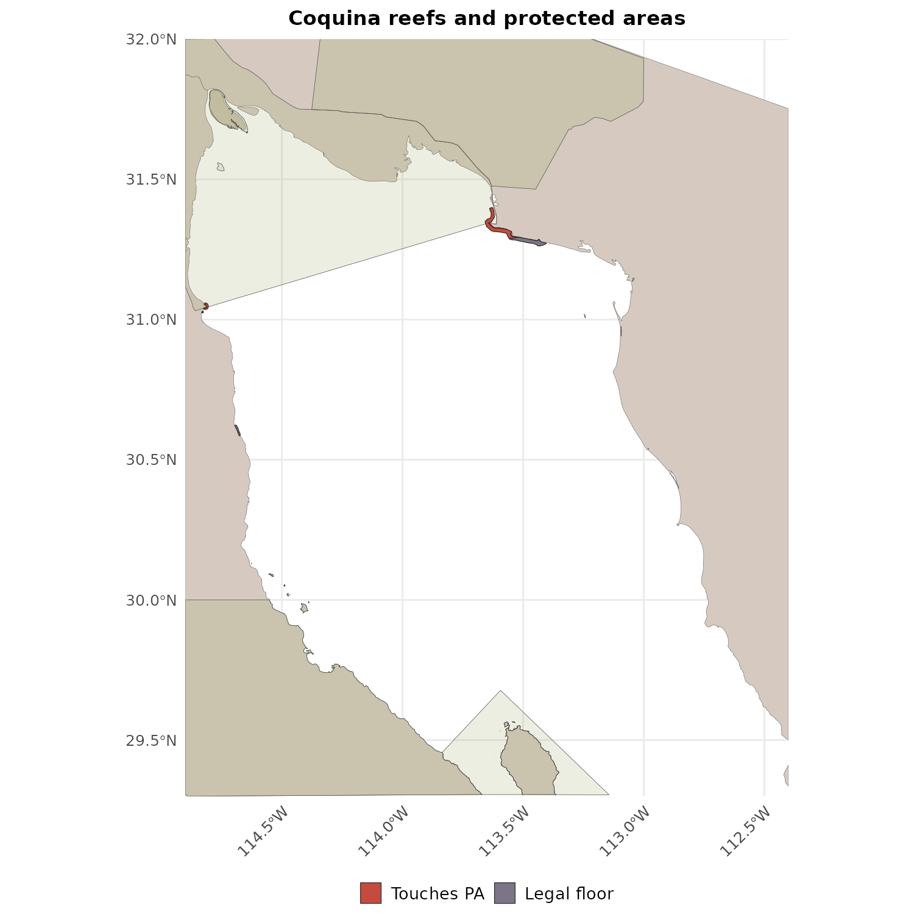
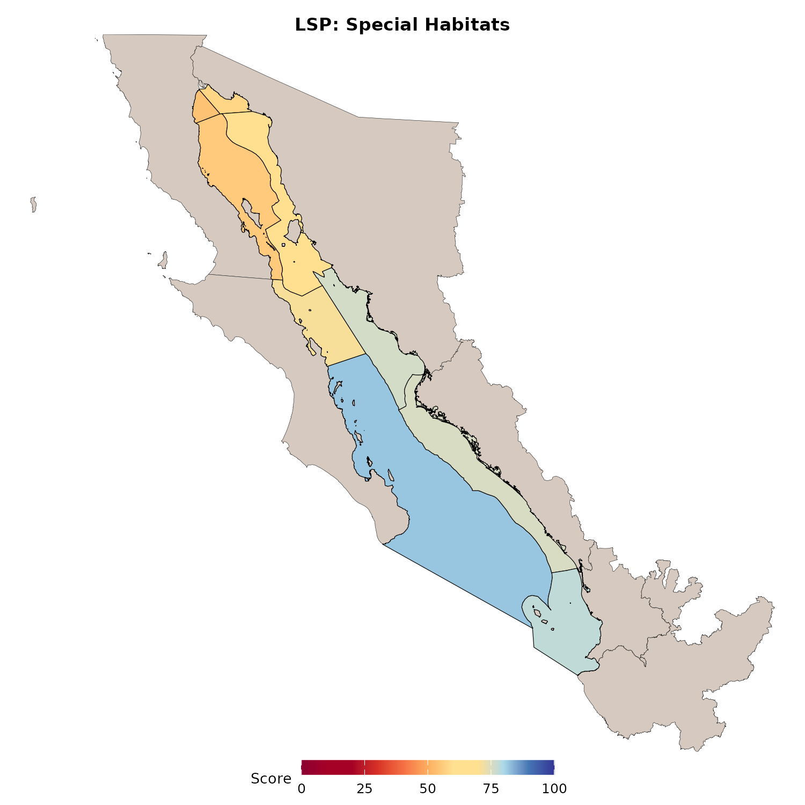
Data sources
- TNC geoportal coquina, coral, and seagrass layers; HEM mangrove land cover
- Combined protected areas, SIMEC, and Ramsar plan tables
- NOM-022-SEMARNAT-2003, NOM-059, LGEEPA, Ley General de Vida Silvestre Art. 60ter, Código Penal Art. 420bis, LFRA, CITES Appendix II coral (as cited in habitat prep)
All other Special Places
These are expert-identified marine places of importance that did not fit cleanly into the categories above.
- Prefer SIMEC and Ramsar plan scores when a place overlaps a protected area.
- Else use curated legal estimates in the codified protection scores sheet.
Method map (inside vs outside PA), then regional scores for this category.
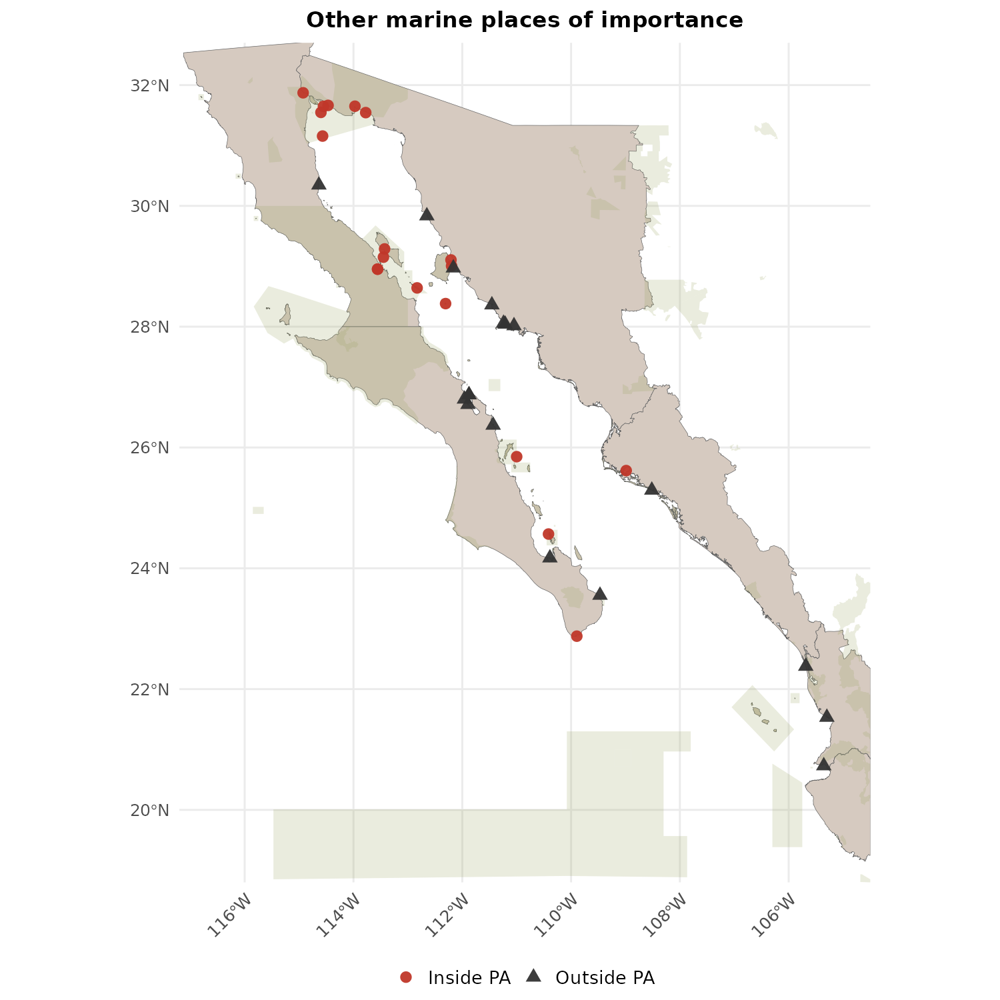
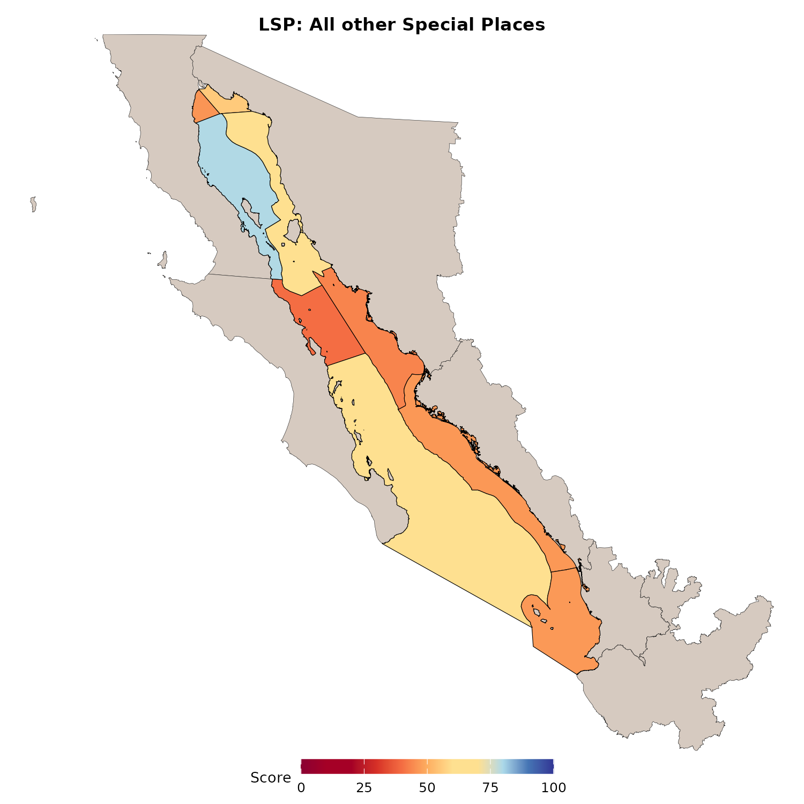
Data sources
- Expert Working Group marine location inventory
- Protected area overlays (WDPA, CONANP, HEM), SIMEC, Ramsar plan presence
- Expert reviewed codified legal scores (Google Sheet above)
Regional category scores for all six LSP types together (same prep exports).
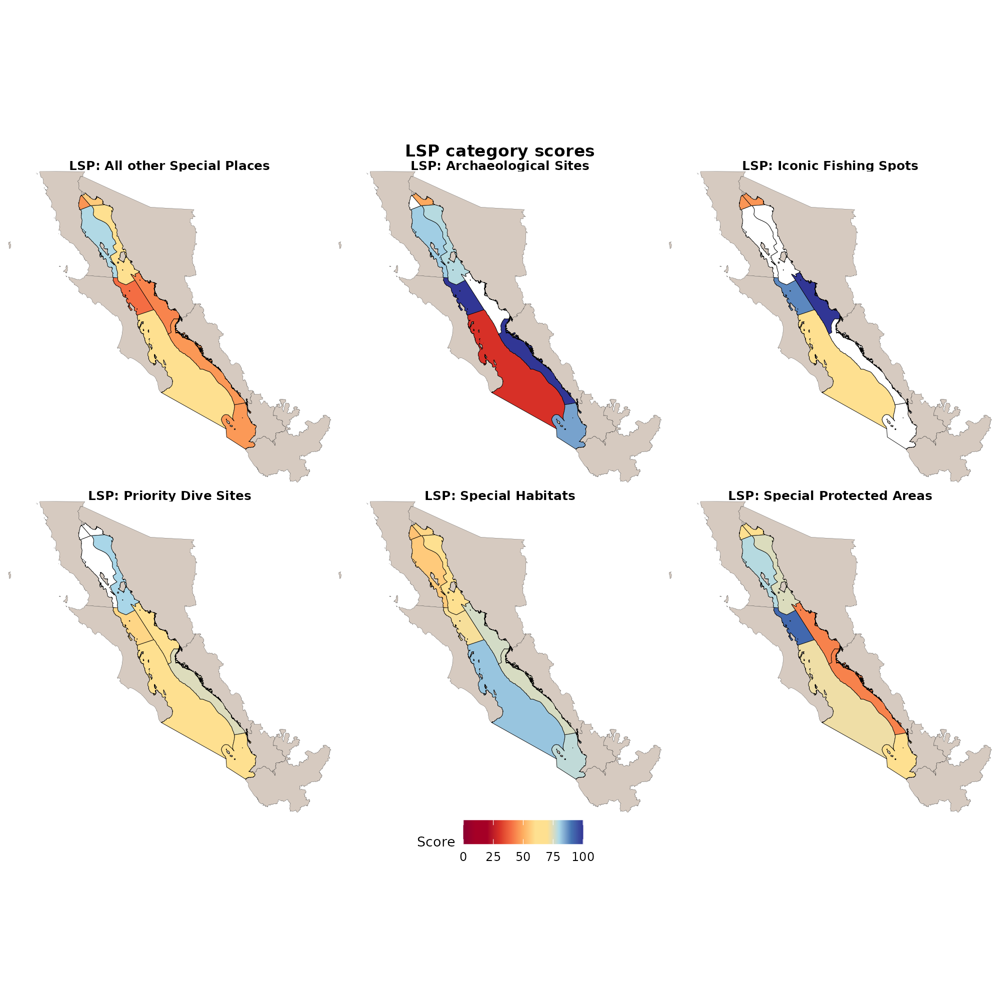
We welcome Expert Working Group feedback on the LSP methods and sources across all categories above.
Iconic Species (ICO)
ICO measures the condition of species that are culturally iconic for Gulf communities.
What experts were asked to do
When building the iconic species list, experts were asked to review the “Iconic Species List” tab and consider three things:
- Are all “iconic species” in the Gulf of California listed?
- If not, please add the species name, common name, and reason for being iconic.
- Please write any notes about the species that can help rationalize its inclusion as an iconic species when the final report is written.
Reasons for being iconic
- Local ethnic or religious practices (could include traditional activities such as fishing, hunting, or commerce)
- Existence value
- Locally recognized aesthetic value (for example touristic attractions or common subjects for art such as whales)
Habitat forming species and species harvested only for utilitarian commerce are outside this definition.
How ICO risk weights are assigned
For each species s in region r and year t, assign one risk weight w_{s,r,t} using this hierarchical decision:
- Prefer NOM-059 when the species is listed under a risk category.
- If NOM-059 treats the species as not listed (weight 1.0), then prefer IUCN when available.
- If IUCN is not available, use CITES.
- Special cases were reviewed when lists conflicted (especially Pacific vs Atlantic IUCN assessments, or when NOM-059 says not listed but IUCN or CITES indicate elevated risk for Gulf-relevant populations).
Then:
ICO_{r,t} = 100 \times \mathrm{mean}_{s \in r}\big(w_{s,r,t}\big)
where:
- ICO_{r,t} is the Iconic Species score for region r in year t
- w_{s,r,t} is the risk weight for species s in that region and year (from NOM-059, IUCN, or CITES as above)
- The mean is taken across iconic species occurring in the region, then multiplied by 100 so the score is on a 0 to 100 scale
NOM-059 weights
| Category | Meaning | Weight |
|---|---|---|
| Not listed | Species not listed under NOM-059 risk categories | 1.00 |
| Pr | Special protection | 0.75 |
| A | Threatened | 0.50 |
| P | Endangered | 0.25 |
| E | Probably extinct in the wild | 0.00 |
IUCN Red List weights
| Category | Meaning | Weight |
|---|---|---|
| LC (and former LR/lc) | Least Concern | 1.00 |
| NT (and former LR/nt) | Near Threatened | 0.75 |
| VU | Vulnerable | 0.50 |
| EN | Endangered | 0.25 |
| CR | Critically Endangered | 0.12 |
| EX | Extinct | 0.00 |
| DD | Data Deficient | Not assigned a weight in the current prep (treated as missing for weighting) |
CITES Appendix weights
| Appendix | Meaning | Weight |
|---|---|---|
| Not listed | Species not listed under a CITES Appendix | 1.00 |
| III | Species protected in at least one country that has asked other CITES Parties for assistance in controlling trade | 0.75 |
| II | Species not necessarily threatened with extinction now, but that may become so unless trade is closely controlled | 0.50 |
| I | Species threatened with extinction; international trade is generally prohibited except in exceptional circumstances | 0.25 |
Species occurrence points (presence and absence with coordinates; Morzaria-Luna et al. 2027) were intersected with OHI marine regions and the inland 10 km buffer to assign regions. Risk status time series were assembled from NOM-059 (2010, 2019, 2021, 2025 draft), IUCN, and CITES.
Data sources
- Expert Working Group iconic species list
- Species occurrence (presence and absence): Morzaria-Luna, H., R. Cavieses-Núñez, J.M. Dorantes-Hernández, and C.R. Navarrete-Torices. 2027. Development of the Atlantis ecosystem model for the Gulf of California. Technical memorandum. CEDO Intercultural.
- Risk status: NOM-059-SEMARNAT, IUCN Red List, and CITES
- Hierarchical decision as above; then mean risk weight across species in each region times 100
Years: 2010-2025 (plot below focuses on the CCE overlapping window used in the SP merge, plus the full series for context)
Version 2 iconic species list edits are done for now. If anyone feels strongly about big changes, please tell me (Sophia); feedback can be incorporated after EWG 3.2.
Review materials:
Figure 24. Iconic Species (ICO) current status by region for 2019-2025, the window we pair with CCE when building the overall Sense of Place series. For each region-year, ICO is 100 times the mean risk weight of culturally iconic species that occur in that region. Risk weights come from a hierarchy across Mexican NOM-059 categories, IUCN Red List status, and CITES listing, so more threatened status lowers the species weight and pulls the regional mean down. Species presence uses Gulf occurrence data from Morzaria-Luna et al. 2027, intersected with OHI marine regions and a 10 km inland buffer.
Figure 25. Full Iconic Species time series by region from 2010 through 2025, using the same risk-weight method as Figure 24. This longer window shows how NOM-059, IUCN, and CITES status changes over time affect regional ICO scores beyond the shorter 2019-2025 SP reporting period.
Topics for discussion
We plan to discuss these items with the group at EWG 3.2, though we encourage feedback prior to or after the meeting as well. We are especially interested in your feedback on the Lasting Special Places methods (categories, protections, floors, and data sources) in the LSP section above. Additionally, if you have any opinions on these topics:
Equal weights for CCE, LSP, and ICO. Confirm whether equal weights are the final choice, or whether any subgoal should be weighted differently.
Dive site statute-based minimum outside protected areas (currently 58) and coquina statute-based minimum (currently 30). Confirm whether these defaults remain the intended values, or whether the group prefers another approach.
Iconic species list. Version 2 list edits are done for now. If anyone feels strongly about big changes, please tell me (Sophia); feedback can be incorporated after EWG 3.2. Review:
Acknowledgment language. Any preferred wording or contacts for acknowledging pueblos originarios without scoring what we have not been invited to score (Acknowledgment: Pueblos originarios).